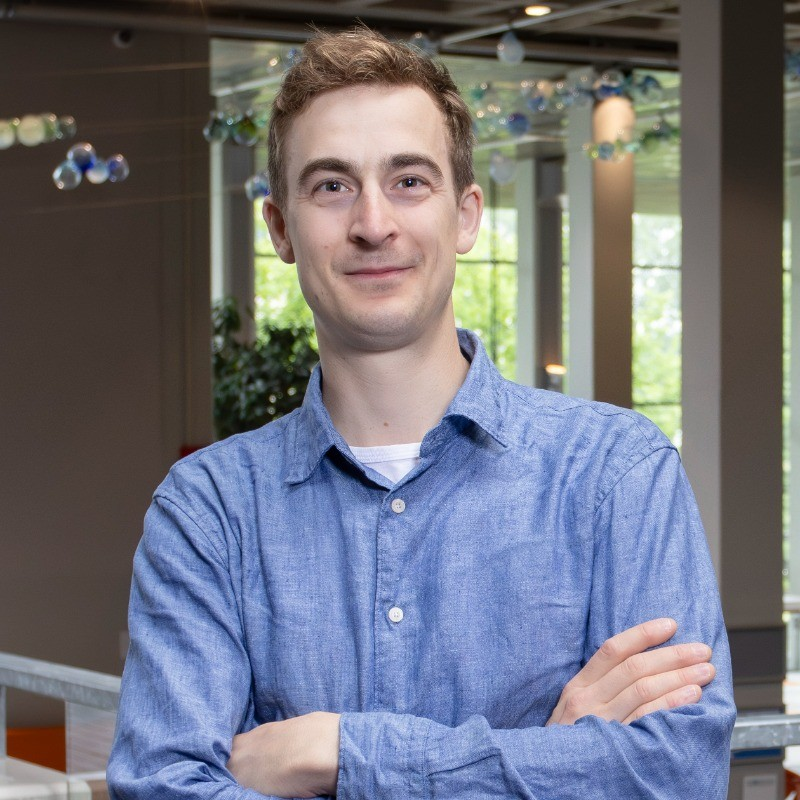
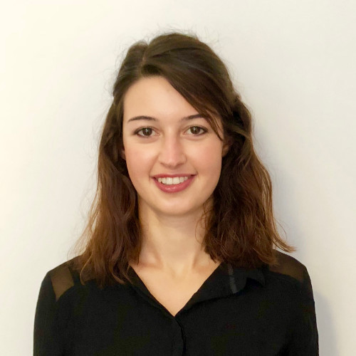

Unravel and understand signalling from your protein data! We extract, map, and interpret intracellular signalling programs from single-cell protein data — turning it into actionable pathway biology for drug discovery. By combining AI-driven and mechanistic models, we deliver explainable insight into the signalling mechanisms that drive each cell's behaviour within your protein data. We are working with various protein measurement technologies to unravel signalling from bulk patient data or single-cell data.
Differences in signalling drive cell fate — distinct clusters run distinct pathway programs. We recover those signalling differences for you, so you can understand drug effects at the signalling level and better predict potential targets by leveraging the flow of information through the network.
Proteins are where biology actually happens — they are the enzymes, receptors, and machines that carry out a cell's decisions. Messenger RNA is only a blueprint, and it is a famously unreliable one: transcript levels correlate weakly with the amount of protein that is finally made, so an mRNA readout is a proxy for a proxy.
Phosphorylation goes one step further. It captures which proteins are switched on right now — the live activity state of a signalling network, minutes ahead of any change in gene expression. That makes single-cell proteomics a far more truthful readout of what a cell is doing than scRNA-seq can ever be.
The SignallingIntelligence (SI) platform grew out of Tim Stohn's PhD thesis, which produced a suite of tools for analyzing single-cell phosphoprotein data. SI builds on this foundation by combining several peer-reviewed tools — which generate mechanistic input — with AI-driven models that refine our understanding of signalling, without sacrificing the interpretability of the mechanistic insight. Here you can find peer-reviewed methods and preprints behind our demultiplexing, normalisation, and signalling-network inference methods.
Common questions about single-cell signalling analysis, phosphoprotein network inference, and how SignallingIntelligence turns single-cell proteomics into actionable pathway biology.
Want to decode signalling in your single-cell data? Reach out to see how our platform can help you disentangle signalling effects at the single-cell level.

